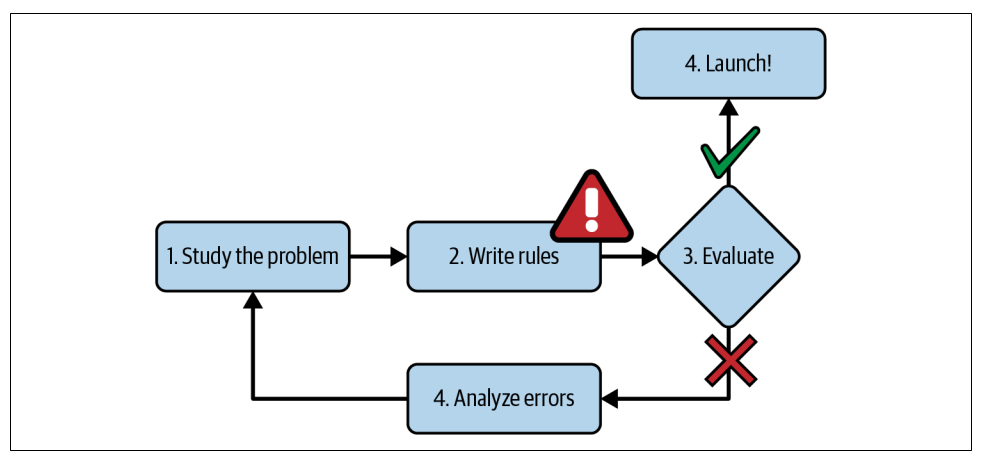
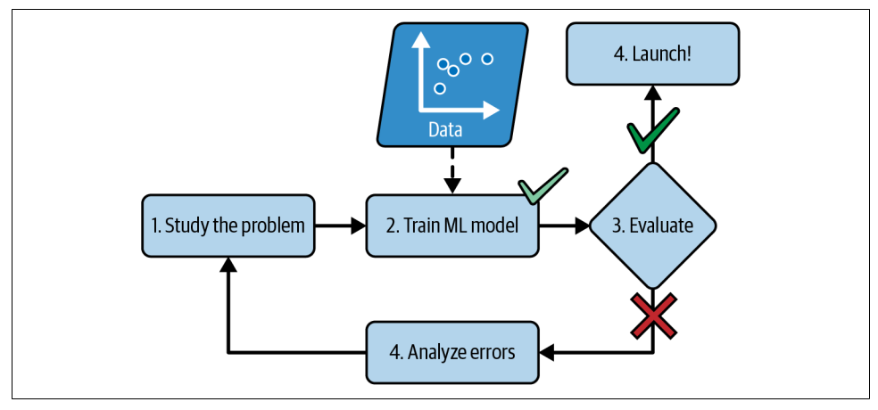
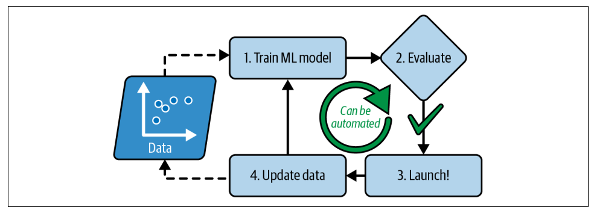

داستان ما
فرض کنید امروز وارد یک شرکت میشوید
مدیر محصول به شما میگوید:
«میخواهم قبل از اینکه مشتری خرید کند، احتمال خرید او را پیشبینی کنیم.»
قدم بعدی شما چیست؟
روش سنتی · Traditional Approach
قبل از ML: برنامهنویس قانون مینوشت

Géron, Hands-On ML (2025), Fig. 1-1
- برنامهنویس قوانین را دستی تعریف میکند
- برنامه بر اساس همین قوانین پیشبینی میکند
- با هر تغییر: برگرد و قوانین را اصلاح کن
قوانین زیاد، شکننده، و سخت نگهداری میشوند.
رویکرد یادگیری ماشین · Machine Learning Approach
با ML: مدل خودش الگو یاد میگیرد

Géron, Hands-On ML (2025), Fig. 1-2
به جای قانوننویسی دستی:
- داده + برچسبهای صحیح به الگوریتم میدهیم
- مدل خودش الگوها را کشف میکند
- با داده جدید، مدل بهروز میشود
Data + Answers → Learning Algorithm → Model
نقشه راه
چرخه حیات یک پروژه ML
فعلا لازم نیست جزئیات را بدانیم.
هدف فقط دیدن نقشه راه است:
قدمهایی که هر پروژه ML از آنها عبور میکند.
تعریف مسئله · Problem Definition
ML از مسئله شروع میشود؛ نه از داده
مدیر میگوید: «مشتری خرید خواهد کرد یا نه؟»
آیا این مسئله به اندازه کافی دقیق است؟
- خرید در ۱ روز آینده؟
- خرید در ۷ روز آینده؟
- خرید در ۳۰ روز آینده؟
اینها سه مسئله متفاوت هستند؛ با دادهها، مدلها و معیارهای ارزیابی متفاوت.
جمعآوری داده · Data Collection
داده را از کجا میآوریم؟
برای فروشگاه اینترنتی:
- سن کاربر
- تعداد خریدهای قبلی
- زمان آخرین خرید
- مجموع مبلغ خریدها
- صفحاتی که بازدید کرده
واقعیت:
گاهی بهترین الگوریتم دنیا را داریم،
اما داده مناسب نداریم.
در این حالت، پروژه شکست میخورد.
آمادهسازی داده · Data Cleaning
آیا میتوانیم مستقیم آموزش بدهیم؟
ستون age در داده:
مشکل: مقدار گمشده + مقدار غیرواقعی
ستون city در داده:
| city |
|---|
| Tehran |
| tehran |
| TEHRAN |
سه مقدار متفاوت، اما یک شهر
آموزش مدل · Model Training
الان تازه میتوانیم مدل بسازیم
بسیاری فکر میکنند یادگیری ماشین یعنی همین بخش.
در حالی که فقط یکی از مراحل است.
مدل از روی دادهها الگو یاد میگیرد:
X (Features) → Patterns → ŷ (Prediction)
Features (X)
↓
Model
↓
Prediction (ŷ)
انطباق با تغییر · Automatically Adapting to Change
سیستم ML با تغییر دنیا سازگار میشود

Géron, Hands-On ML (2025), Fig. 1-3
وقتی دنیا تغییر میکند:
- الگوهای اسپم عوض شده
- رفتار مشتریان تغییر کرده
- بازار دیگرگون شده
روش سنتی:
قوانین را دستی اصلاح کن.
ML:
داده جدید جمع کن و مدل را دوباره آموزش بده.